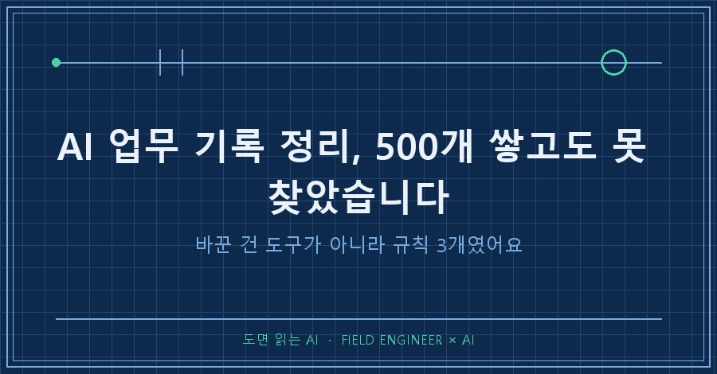
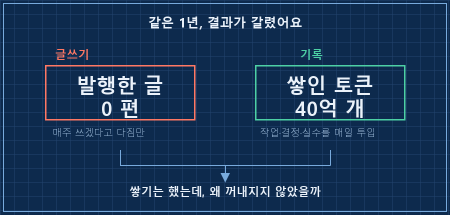
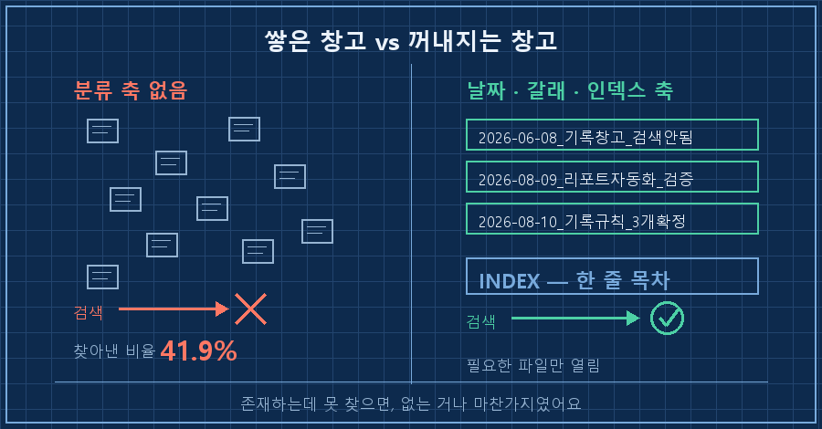
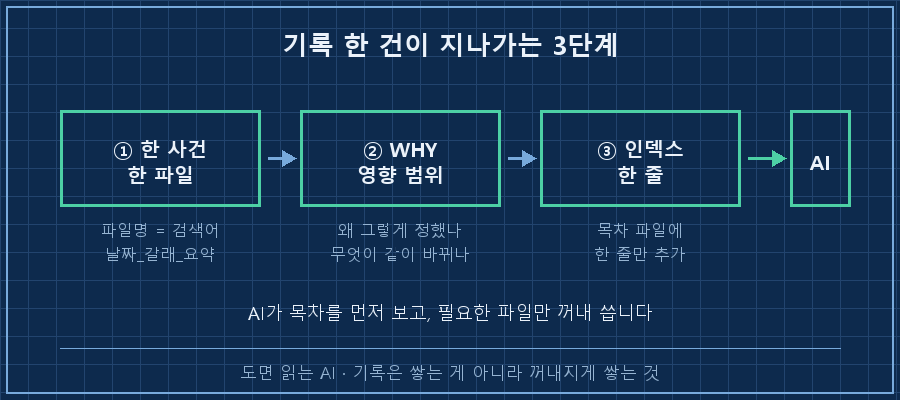

AI 업무 기록 정리는 쌓는 일이 아니라 꺼내지게 쌓기입니다. 저는 문서 500개를 채우고 나서야 이걸 알았어요.
지난주에 오래된 글 서랍을 정리하다가 이상한 걸 발견했거든요.
1년 전의 제가 써놓고 발행은 안 한 글 두 편이요.
거기엔 "앞으로 이 공간에서 계속 나누겠다"고 적혀 있었습니다.
그 다짐 이후 1년 동안 제가 발행한 글은 0편이에요.
저는 현장에서 설비 제어하는 일로 15년쯤 보냈어요. 도면 보고, 신호 잡고, 안 되면 원인 찾는 쪽입니다.
글을 못 쓴 이유가 바빠서인 줄 알았는데, 파보니까 아니더라고요.
저한테 없었던 건 시간도 글솜씨도 아니고 꺼낼 수 있는 창고였습니다.

1. 글은 0편인데 기록은 미친 듯이 쌓였어요
재밌는 게 여기예요.
글은 한 편도 못 썼는데, 그 1년 동안 기록은 정말 많이 했습니다.
글 대신 AI한테 매일을 갈아 넣었거든요.
그날 한 작업, 내린 결정, 반복한 실수, 판단 기준까지 전부요.
1년 쌓인 걸 세어보니 작업 이력 수백 건에 지식 문서 500개, AI랑 주고받은 토큰이 40억 개였어요. 책으로 치면 4만 권쯤 되는 양이라고 하더라고요..
그러니까 "글쓰기로 나를 세우겠다"는 다짐은 실패했는데, 기록으로 세우는 건 저도 모르게 되고 있었던 거죠.
여기까지만 보면 훈훈한 얘기인데, 문제는 그다음이었습니다.
2. 500개를 쌓아놨는데 검색이 안 되더라고요
쌓기만 하면 되는 줄 알았어요.
그런데 정작 필요한 순간에 안 나왔습니다.
"작년에 그거 어떻게 해결했더라" 하고 찾으면, 분명 어딘가 적어놨는데 검색 결과에 안 걸리는 거예요.
올해 6월에 제 기록 창고 검색 성능을 한번 재봤어요. 찾아야 할 문서를 실제로 찾아낸 비율이 41.9%에서 더 안 올라가더라고요.
절반도 못 찾는다는 뜻이죠. 그때 노트에 이렇게 적어놨더라고요.
[2026-06-08] KB 데이터 산재 → 검색 recall 41.9% 정체.
"더 쪼개기 ≠ 개선, 진짜 문제는 분류 축 부재"처음엔 파일을 더 잘게 쪼개면 나아질 줄 알았어요. 정반대였습니다.
쪼갤수록 같은 내용이 여기저기 흩어져서 어디를 봐야 할지 더 모르게 됐거든요.
진짜 원인은 양이 아니라 분류 축이었어요.
언제 있었던 일인지, 어느 갈래 일인지, 왜 그렇게 정했는지가 파일 안에 안 적혀 있으니까 나중의 저도 못 찾고 AI도 못 찾은 겁니다.
존재하는데 못 찾으면 없는 거나 마찬가지였어요.

3. 그래서 규칙을 딱 세 개만 정했습니다
도구를 바꾸지는 않았어요. 지금도 그냥 텍스트 파일입니다.
AI 업무 기록 정리에서 제가 바꾼 건 도구가 아니라 쓰는 방식 세 가지였어요.
하나, 한 사건에 한 파일. 파일명이 곧 검색어.
날짜와 갈래와 한 줄 요약을 파일명에 박습니다. 폴더를 뒤지지 않고 파일명만 훑어도 찾아지게요.
2026-06-08_기록창고_검색안됨_분류축부재.md
2026-08-09_리포트자동화_무인가동_검증완료.md둘, 무엇을 했는지보다 왜 그렇게 했는지를 남긴다.
이게 제일 크게 바뀐 부분이에요.
예전 기록은 "폴더 구조를 이렇게 바꿨다"에서 끝났는데, 그러면 몇 달 뒤에 이유를 모르니까 멀쩡한 걸 도로 되돌리는 사고가 납니다. 실제로 한 번 겪었고요.
지금은 결정마다 이유와 영향 범위를 같이 적습니다.
셋, 파일을 만들면 인덱스에 한 줄 추가한다.
문서 500개를 통째로 읽힐 수는 없으니, 목차 파일 하나에 한 줄씩만 남겨요.
- [기록창고 검색 실패](2026-06-08_기록창고_검색안됨.md) — 쪼개기로는 안 됨, 축이 문제이 한 줄이 있어야 AI가 "무슨 파일이 있는지"를 먼저 보고 필요한 것만 열어봅니다. 사람이 목차 보고 책 펴는 거랑 똑같아요.
| 규칙 | 안 지키면 생기는 일 | 확인 방법 |
|---|---|---|
| 한 사건 한 파일 (파일명=검색어) | 같은 내용이 흩어져 어디를 볼지 모름 | 파일명만 보고 내용이 떠오르나 |
| 왜(WHY)와 영향 범위 기록 | 몇 달 뒤 이유를 몰라 멀쩡한 걸 되돌림 | 3개월 전 파일 열어 이유가 읽히나 |
| 인덱스 한 줄 추가 | AI가 문서 존재 자체를 모름 | 목차만 보고 원하는 파일 찾히나 |

4. 창고가 생기니까 글이 나왔어요
지금 세어보니 지식 문서는 515개, 줄 수로 23만 줄이 넘었습니다.
1년 전보다 양은 더 늘었는데, 이제는 필요할 때 꺼내집니다. 규칙 세 개 차이예요.
이 글도 그래요.
빈 화면 앞에서 "뭘 쓰지.." 하고 앉아 있었던 게 아니라, 서랍에서 나온 옛날 글 한 편이랑 두 달 전 기록 노트 한 줄을 꺼내서 붙인 게 전부거든요.
1년 전의 저는 글감이 없어서 못 쓴 게 아니었어요.
창고가 없었다는 게 정확한 진단이었습니다.
그때의 저한테 한마디 해줄 수 있다면, 매주 쓰겠다고 다짐하지 말고 매일 세 줄만 남기라고 하겠습니다.
이런 것도 궁금하실 것 같아요
Q. AI 업무 기록 정리는 어떤 앱으로 하는 게 좋나요?
저는 그냥 텍스트 파일(.md)에 씁니다. 앱을 바꿔봐야 검색이 되는 게 아니더라고요. 중요한 건 파일명·WHY·인덱스 세 가지고, 이건 어떤 도구를 쓰든 지킬 수 있어요. 오히려 특정 앱에 묶이면 나중에 AI한테 통째로 읽히기가 더 번거로워집니다.
Q. 매일 기록하려면 시간이 얼마나 드나요?
일 끝날 때 3~5분이에요. 요령이 하나 있는데, 제가 처음부터 쓰지 않고 그날 작업하던 AI한테 "오늘 한 일이랑 결정한 이유를 파일로 정리해줘"라고 시킨 다음 제가 고칩니다. 초안은 AI가, 왜 그렇게 정했는지는 제가 채우는 식이요. 백지에서 시작하는 것보다 훨씬 오래 갑니다!
여러분 기록 창고에는 지금 뭐가 잠들어 있나요?
1년 묵은 파일 하나 열어보시면, 그게 다음에 쓸 무언가의 재료인지 아닌지 바로 아실 거예요.
---
현장 엔지니어를 위한 AI 도입·자동화 문의: makefield.ai
태그: #AI업무기록정리 #AI기록습관 #AI지식관리 #AI메모정리 #업무일지자동화 #AI세컨브레인 #지식베이스만들기 #기록검색 #AI활용법 #AI로일하기 #노트정리법 #업무기록양식 #개인지식관리 #현장엔지니어 #도면읽는AI